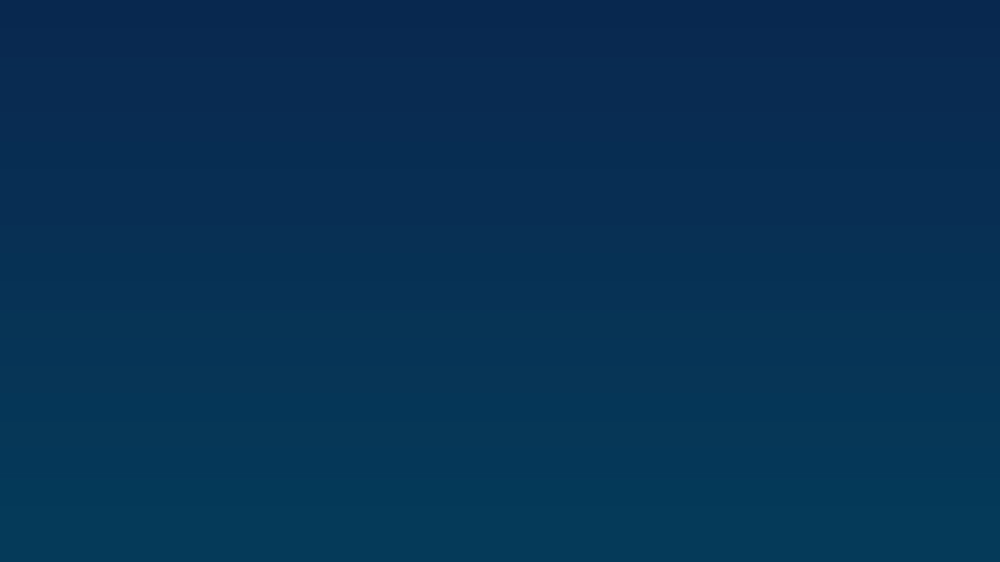
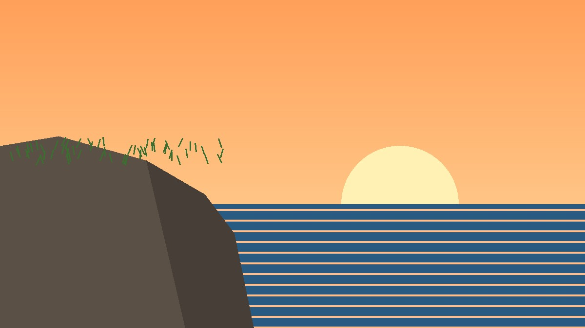
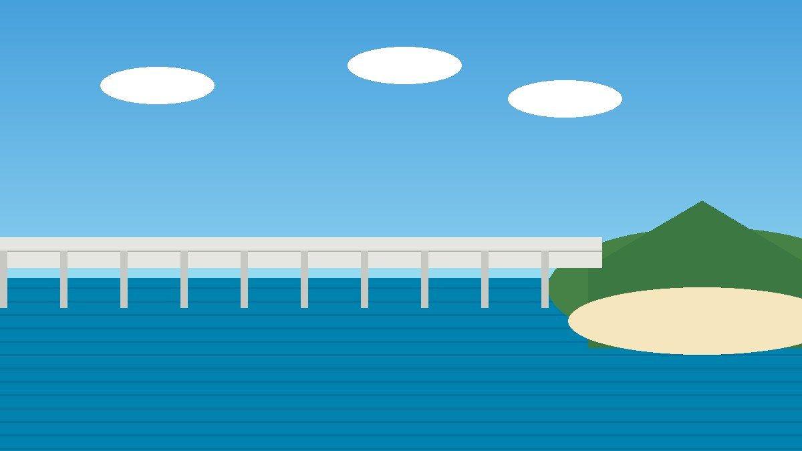
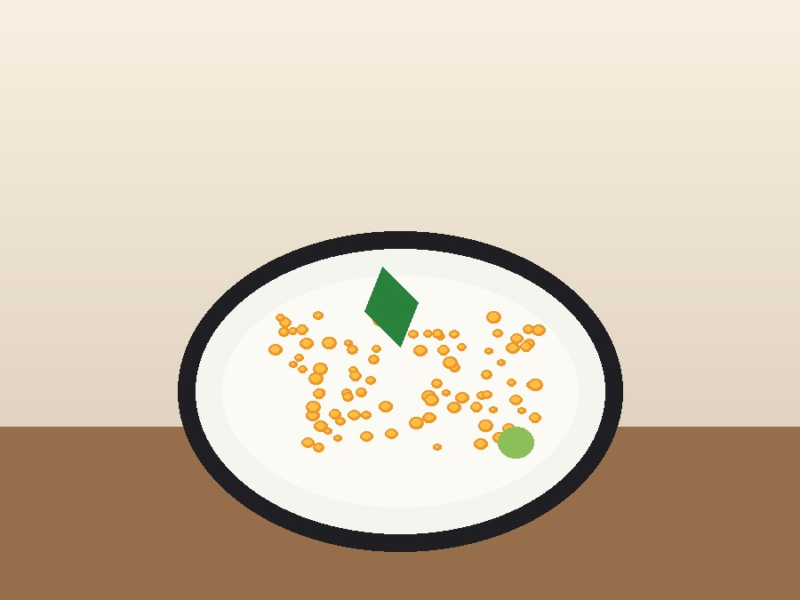
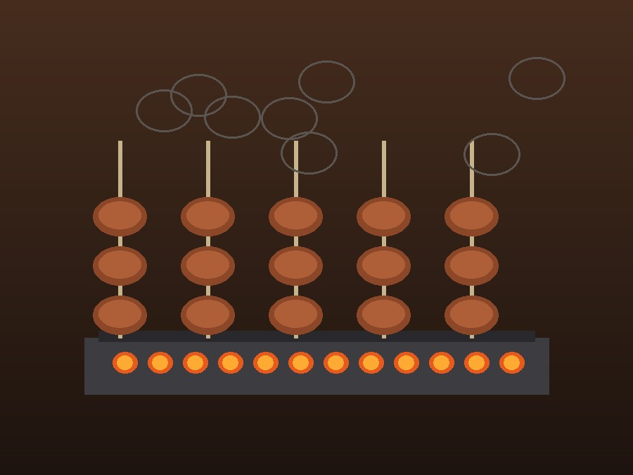
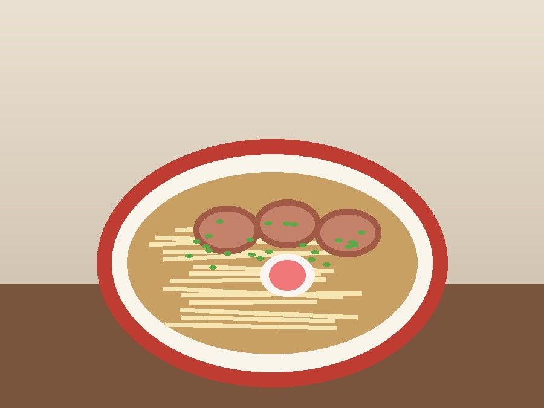
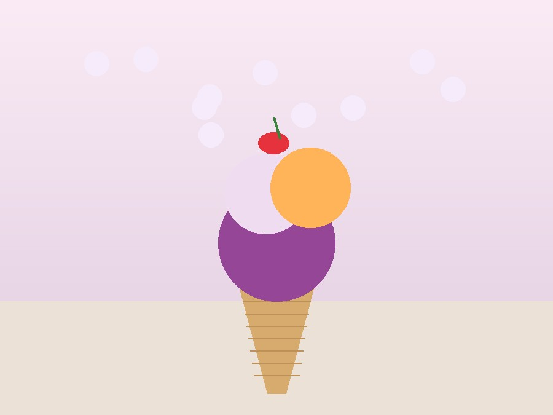

五天四夜 · 那霸・本部・美里
2026.11.09-13
每一天都是一頁全新的故事
長榮航空清晨班機，四小時飛抵那霸。放下行李後直奔國際通，伴手禮、藥妝、沖繩特產琳琅滿目。晚上在美榮橋市場品嚐在地海鮮。

一早就直奔美麗海水族館，黑潮之海的鯨鯊水槽震撼人心。下午在 Premium Outlet 購物，傍晚抵達本部町的紫藤飯店。
早上在紫藤飯店享用早餐，再次前往美麗海水族館細細遊覽。中午在 Premium Outlet 購物，傍晚南下返回那霸，入住日航飯店。

從萬座毛的大象鼻岩石，到殘波岬的白色燈塔，再到古宇利島的夢幻藍海。傍晚在美國村的海灘看日落，19:00 前還車返回日航飯店。

早上從日航飯店 checkout，把行李寄放到機場。中午在那霸國際通做最後採購，買齊伴手禮後前往機場，19:00 搭長榮晚班機回台北。
那些讓人一再回味的琉球滋味

歷史悠久的老字號餐廳，沖繩名產黑豬料理。烤豬排、豬肉涮涮鍋，每一口都是琉球的風味。

那霸最舊的海鮮市場，魚糕、海產丼、沖繩生魚片。早去才能买到最新鮮的海味。

鹽味清湯、扁麵條、叉燒大片。那霸市區有好幾家排隊名店，值得專程尋找。

沖繩的特產冰品，紅芋霜淇淋、苦瓜冰、黑糖剉冰，都是當地人的日常消暑聖品。